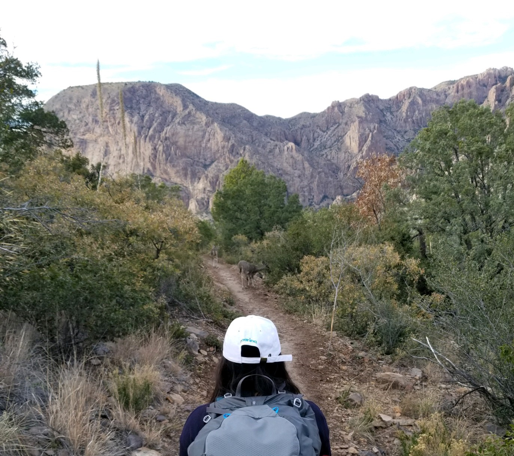

-
1 HTML
-
2 SQL
-
2 C
-
4 Java
-
4 Python
About Me
I began my computer science journey in high school when I took Computer Programming I and II.
The class was fun and seemed more interesting than any other course I've taken so
I decided to commit to a Computer Science degree.
That was back in 2016 and now as senior at The University of Texas at San Antonio, I am excited
to start my journey not as a student but as a computer scientist!

I love participating in the student led organizations on campus! I am heavily invovled in
ACM UTSA as I have served as President
for the Association of Computing Machinery - Women's chapter. One of my goals as a
female student in CS is to help the underrepresented and underprivileged students in the computer
science field to thrive. I love spending time to promote inclusivity and diversity! This has led me to join ACM-W and start UTSA's first ever
marginalized gender centric hackathon.
I believe that work life balance is the key to success - which leads me to
balance my life through my interests in hiking, gardening, photography, painting, and much more!
I am currently a Software Engineer Intern for JP Morgan & Chase Summer 2021.